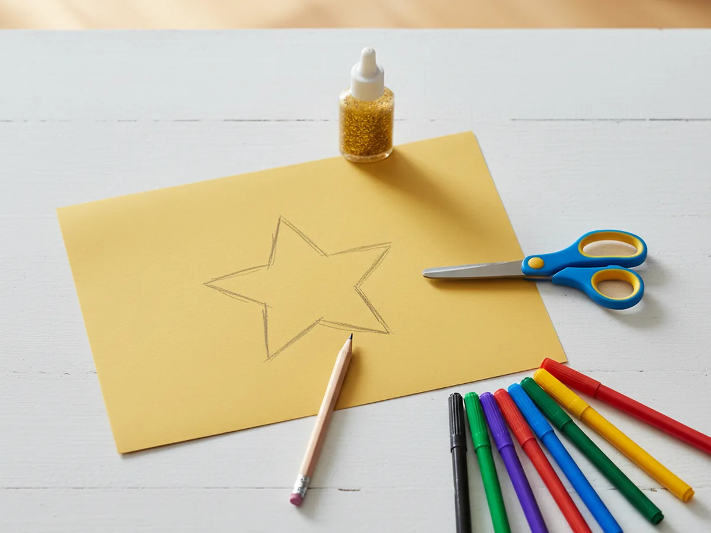
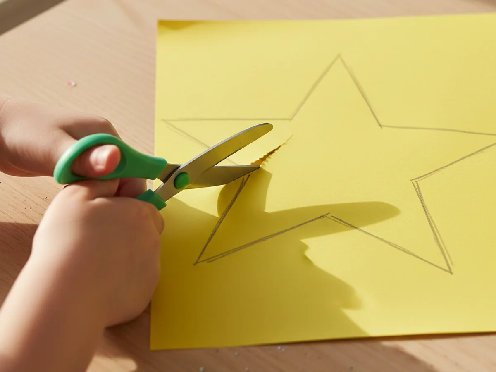
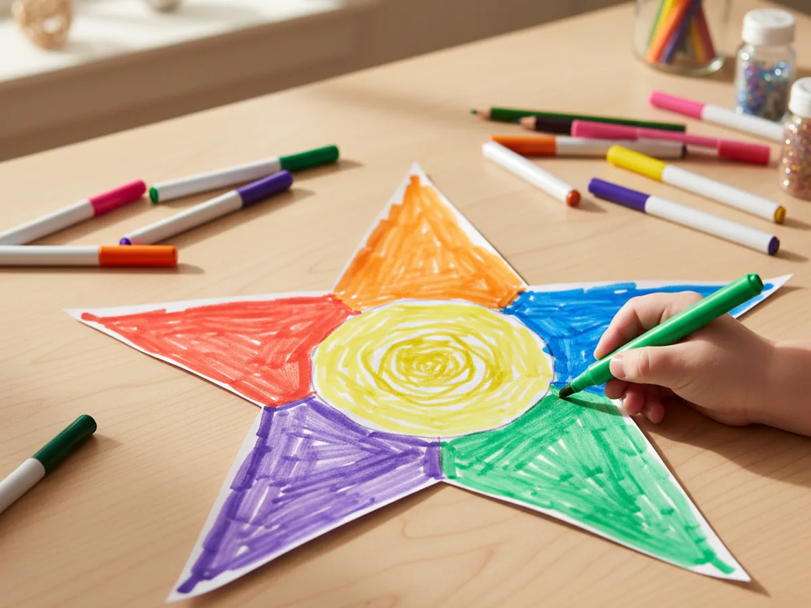
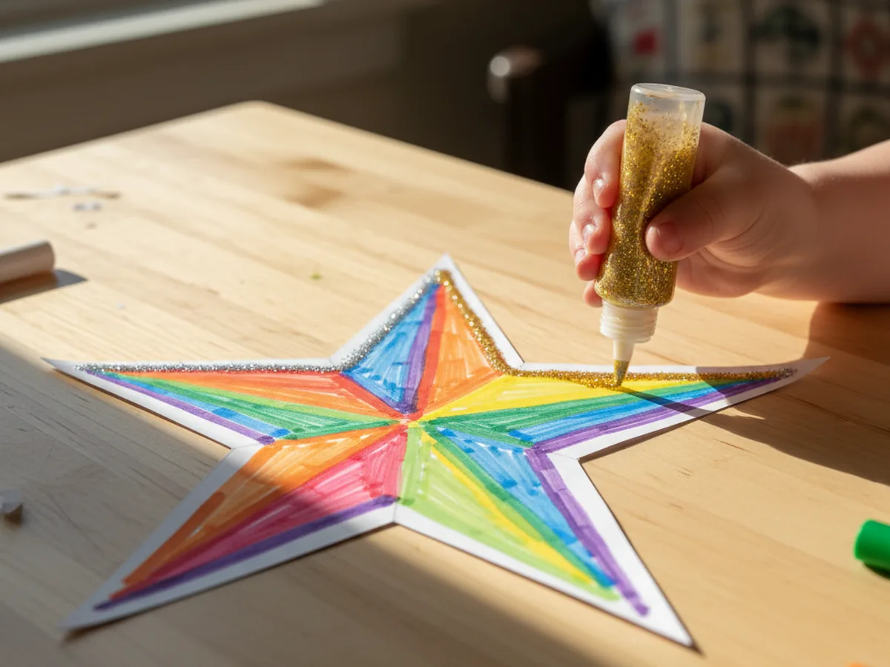
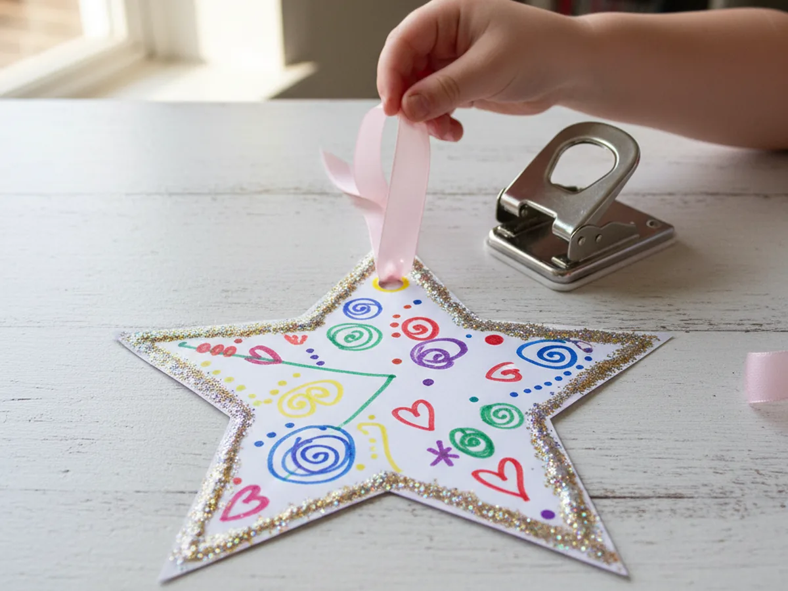
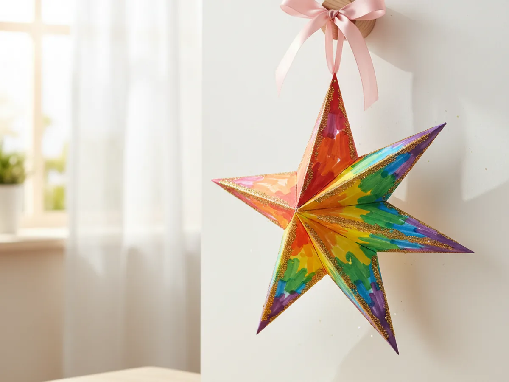

Published on April 10, 2026

Stars are one of those shapes that kids never seem to get tired of. This paper star craft is the perfect low-mess activity for a quiet afternoon at home, a rainy day project, or even a sweet little gift your child can make for someone they love. All you need is some cardstock, markers, glitter glue, and about 25 minutes together. ⭐
The best part? Kids get to make every choice themselves, from the colors they pick to exactly how sparkly they want their star to be. There is no wrong way to decorate it, which means zero frustration and a whole lot of pride when it is finished.
This paper star craft hits a sweet spot that a lot of activities miss: it is simple enough that kids can actually do most of it themselves, but the result still looks genuinely beautiful. Young children love the process of filling in a big shape with color, and adding glitter glue at the end feels like the most exciting finishing touch.
Beyond the fun, cutting along a traced outline is great practice for fine motor skills and hand-eye coordination. Kids also get to make real creative decisions here, like choosing which colors to use, where to add the sparkle, and how to arrange their star once it is done. That sense of ownership over the finished piece is something that makes a child beam with pride. 🌟
This paper star craft uses simple supplies you may already have at home, plus a few fun extras that are worth having in your craft kit.
Ready to get started? Here is how to make your paper star craft from start to finish. These steps are simple and easy to follow, even for little hands.
Set up your craft table and lay out all your supplies. Take a sheet of cardstock and use a pencil to draw a large five-pointed star. Aim for a star that is around 8 to 10 inches wide from point to point. That size gives your child plenty of space to color and decorate without feeling cramped. If drawing a star freehand feels tricky, fold a small square of paper into a rough triangle shape, cut out the star points, and use it as a template to trace around.

Now comes the cutting. Let your child hold the scissors and follow the pencil line around the star. Cutting around all those inward angles is a real skill, and it is totally fine if the edges are a little uneven. That handmade look is actually part of what makes the finished piece so charming. For children under 4, you can pre-cut the star yourself so they can jump straight to the decorating.

This is where the real fun begins. Let your child color the front of the star however they like using washable markers. They might fill each point in a different color, blend two shades together in the center, or go all in on their favorite color from edge to edge. There is no wrong approach. Encourage them to fill it in fully so the color looks bright and bold once it is finished.

Once the coloring is done, it is time to add sparkle. Let your child squeeze thin lines of glitter glue along the edges of the star, around the points, or in swirling patterns across the middle. This step always produces big smiles. Set the star flat on the table and let it dry for about 15 to 20 minutes before moving on. Rushing this step means smudged glitter, so a little patience goes a long way. ✨

Once the glitter glue is fully dry, use a single hole punch to make a small hole near the top point of the star. Thread a piece of ribbon or yarn through the hole and tie a simple knot to create a hanging loop. Cut the ribbon to whatever length works best for where you plan to display it. About 8 inches makes a nice loop for hanging from a doorknob, a curtain rod, or a hook on the wall.

Your paper star craft is ready to shine. Hang it near a window so the light catches the glitter, clip it to a string of fairy lights, or let your child choose the perfect spot. Kids love seeing something they made displayed somewhere visible, and this little star looks lovely in a bedroom, a playroom, or even on a holiday garland. It also makes a wonderful handmade gift for grandparents, teachers, or friends.

Double-Layer Star: Cut two stars from different colors of cardstock. Rotate one slightly and glue it behind the other to create a layered eight-pointed star effect. It looks more complex than it is, and the two-tone result is stunning.
Mini Star Mobile: Cut five or six stars of different sizes, decorate each one, and hang them at varying lengths from a wooden twig or a dowel to create a simple mobile. This version is especially lovely for a nursery or a toddler's room.
Holiday Star: Use red, gold, and green cardstock for a Christmas version, or pastel pink and purple for Valentine's Day. The basic paper star craft adapts beautifully to any holiday or season just by swapping the colors and ribbon.
This paper star craft is one of those simple projects that punches well above its weight. It takes very little time, uses supplies you probably already have, and gives your child something they are genuinely proud to show off. The process is calm, low-mess, and full of little creative decisions that make kids feel capable and confident.
Sometimes the best crafts are the ones that look beautiful and feel easy. This is one of them. Give it a try the next time you have 25 minutes and want to make a little something together. 🌟
If your child enjoyed this paper star craft, they will love these other simple paper projects too.
Happy crafting, and enjoy every sparkly moment with your little one.